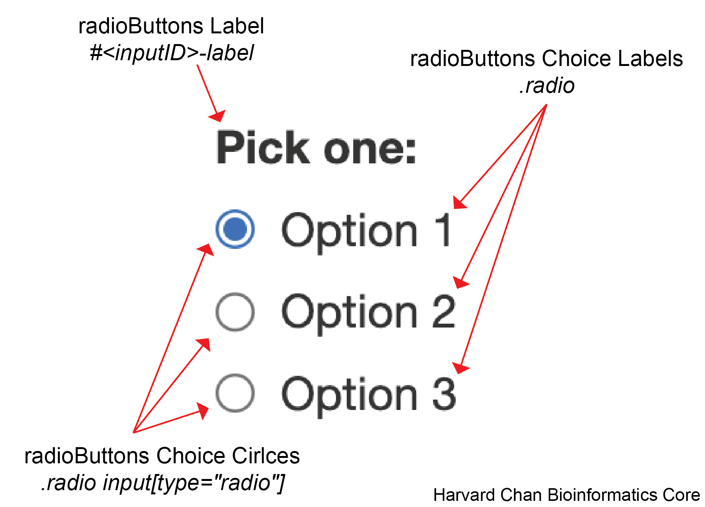

radioButtons
Will Gammerdinger
radioButtons
Below is a key for the elements that can be altered within the radioButtons():

Jump to the following sections:
radioButtons Label
An example CSS entry for the radioButtons label is below:
/* radioButtons Label */
#<inputID>-label{
height: 100px;
width: 200px;
background-color: purple;
color: green;
font-family: Monospace;
font-size: 20px;
font-style: italic;
font-weight: 400;
border-color: orange;
border-radius: 5px;
border-style: dotted;
border-width: 5px;
padding: 1px 2px 3px 4px;
opacity: 40%;
box-shadow: inset 0 0 10px rgba(0, 0, 0, 0.5);
text-shadow: -3px -3px 2px tomato;
}Note: Replace
<inputID>with what the inputID for the slider
| Argument | Note |
|---|---|
height |
Height of the radioButtons label box (reference) |
width |
Width of the radioButtons label box (reference) |
background-color |
The background color for the text space (reference) |
color |
The color of the text (reference) |
font-family |
The font used (reference) |
font-size |
The size of the font (reference) |
font-style |
Whether the font is normal or italic (reference) |
font-weight |
How thick or bold the font is (reference) |
border-color |
Color of the border (reference) |
border-radius |
How curved the radius of the corners are (reference) |
border-style |
Style of the border (reference) |
border-width |
Width of the border (reference) |
padding |
How much space to leave around the text(reference) |
opacity |
Opacity of the label (reference) |
box-shadow |
The shadow of the box outlining the text space (reference) |
text-shadow |
The shadow of the text within the text space (reference) |
radioButtons Choice Labels
An example CSS entry for the radioButtons choice labels is below:
/* radioButtons Choice Labels */
.radio {
height: 50px;
width: 200px;
background-color: blue;
color: white;
font-family: sans-serif;
font-size: 10px;
font-style: italic;
font-weight: 100;
border-color: green;
border-radius: 10px;
border-style: dashed;
border-width: 5px;
padding: 20px 10px 30px 40px;
opacity: 70%;
box-shadow: inset 0 0 10px rgba(0, 0, 0, 0.5);
text-shadow: -3px -3px 2px tomato;
}| Argument | Note |
|---|---|
height |
Height of the radioButtons choice label boxes (reference) |
width |
Width of the radioButtons choice label boxes (reference) |
background-color |
The background color for the text space (reference) |
color |
The color of the text (reference) |
font-family |
The font used (reference) |
font-size |
The size of the font (reference) |
font-style |
Whether the font is normal or italic (reference) |
font-weight |
How thick or bold the font is (reference) |
border-color |
Color of the border (reference) |
border-radius |
How curved the radius of the corners are (reference) |
border-style |
Style of the border (reference) |
border-width |
Width of the border (reference) |
padding |
How much space to leave around the text(reference) |
opacity |
Opacity of the label (reference) |
box-shadow |
The shadow of the box outlining the text space (reference) |
text-shadow |
The shadow of the text within the text space (reference) |
Targeting Specific Choices
If you only want to make changes to specific choices then you can use :nth-child pseudo class like:
/* radioButtons Choice Label Specific */
.radio:nth-child(<insert_element_number>) {
color: red
}Where <insert_element_number> represents a 1-indexed numbering of the radioButton choice.
radioButtons Choice Circles
An example CSS entry for the radioButtons choice circles is below:
/* radioButtons Choice Circles */
.radio input[type="radio"] {
accent-color: red;
opacity: 50%;
}| Argument | Note |
|---|---|
accent-color |
The color of the radioButtons choice circles (reference) |
opacity |
Opacity of the radioButtons choice circles (reference) |
Targeting Specific Choice Circles
If you only want to make changes to a specific choice circle then you can use :nth-child() pseudo class like:
/* radioButtons Choice Circle Specific */
.radio:nth-child(<insert_element_number>) input[type="radio"] {
accent-color: red
}Where <insert_element_number> represents a 1-indexed numbering of the radioButton choice circle.